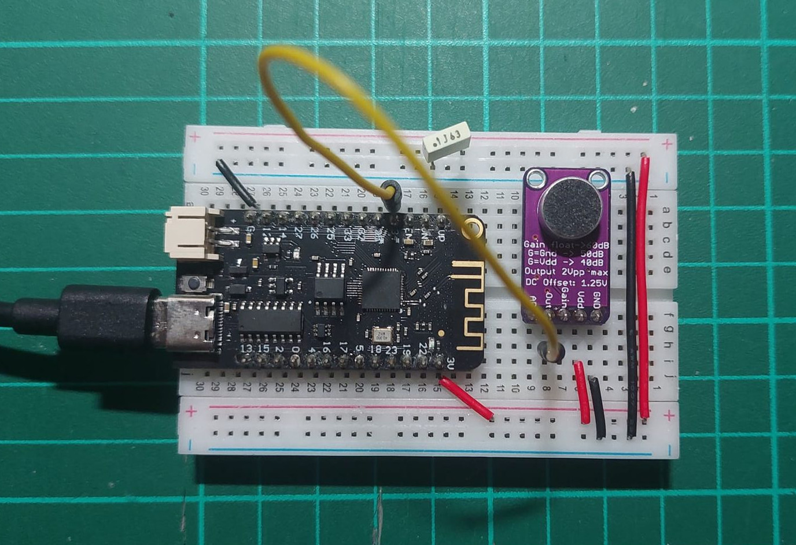
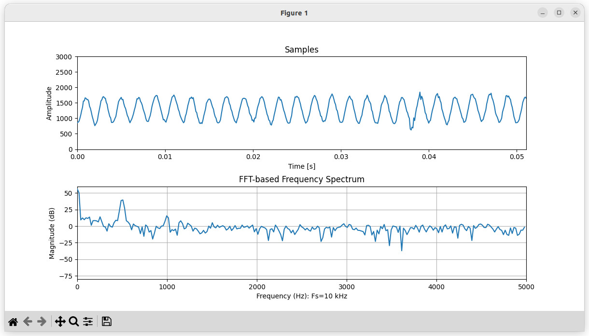
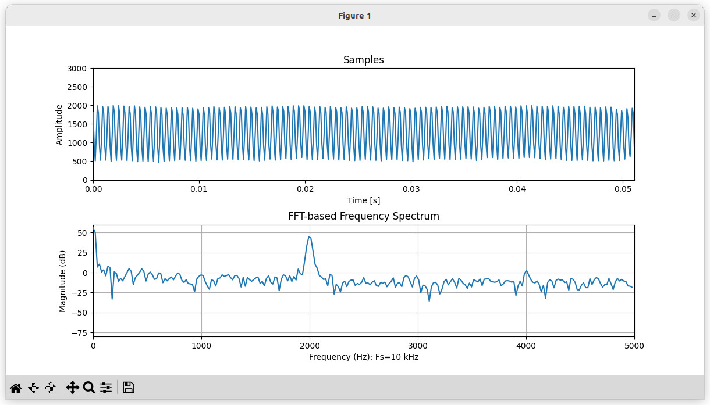
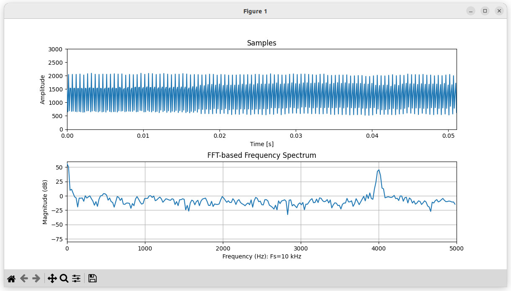

การอ่านค่าสัญญาณเสียงแอนะล็อกด้วย ESP32 และแสดงผลด้วย Python#
- การวัดสัญญาณแอนะล็อกจากโมดูลไมโครโฟนเสียง
- โค้ด Arduino Sketch สำหรับ ESP32
- โค้ด Python สำหรับรับข้อมูลและวาดกราฟด้วยคอมพิวเตอร์
▷ การวัดสัญญาณแอนะล็อกจากโมดูลไมโครโฟนเสียง#
โมดูลเซนเซอร์เสียงมีหลายชนิด สามารถจำแนกได้ตามชนิดของสัญญาณเอาต์พุต เช่น มีเอาต์พุตเป็นสัญญาณแอนะล็อก หรือ เชื่อมต่อแบบดิจิทัลจากไมโครโฟนแบบ MEMS เพื่อรับข้อมูลตามรูปแบบของ I2S
บทความที่เกี่ยวข้องคือ "การใช้งานโมดูล MAX4466 Sound Sensor" ซึ่งกล่าวถึง โมดูลไมโครโฟนเสียงแบบ Electret Microphone และมีวงจรขยายเสียงที่ใช้ไอซี MAX4466 ซึ่งให้เอาต์พุตเป็นสัญญาณแอนะล็อก สัญญาณเสียงที่ถูกแปลงเป็นสัญญาณไฟฟ้าแบบแอนะล็อก จะถูกแปลงเป็นข้อมูลแบบดิจิทัลได้ โดยการใช้วงจร ADC (Analog-to-Digital Converter) อาจเป็นไอซีภายนอก หรือ วงจรภายในชิปไมโครคอนโทรลเลอร์ เช่น ESP32
ในบทความนี้ สาธิตการเขียนโค้ด Arduino-ESP32 (v3.0.0) เพื่อใช้งานวงจรภายใน ADC จำนวน 1 ช่องสัญญาณ และส่งข้อมูลที่ได้ไปยังคอมพิวเตอร์ผู้ใช้ ผ่านทาง Serial Port และมีการเขียนโค้ด Python เพื่อรับค่าและนำไปประมวลผลเชิงตัวเลข เช่น การวิเคราะห์สัญญาณแบบฟูเรียร์ ด้วย FFT (Fast-Fourier Transform)
▷ โค้ด Arduino Sketch สำหรับ ESP32#
โค้ดต่อไปนี้ สาธิตการอ่านค่าจาก ADC ที่ขา GPIO34 โดยใช้วงจรตัวนับ หรือ
Hardware Timer ทำหน้าที่กำหนดอัตราการอ่านค่าจาก ADC
โดยเรียกใช้ฟังก์ชัน timer_callback() เมื่อเกิดอินเทอร์รัพท์จากการทำงานของวงจรตัวนับ
ในโค้ดตัวอย่างได้กำหนดอัตราการชักตัวอย่างจากสัญญาณแอนะล็อกไว้ที่ความเร็ว Fs = 10000 ตัวอย่างต่อวินาที
การอ่านข้อมูลจากอินพุตและเก็บข้อมูลลงในอาร์เรย์ samples[] จะทำไปจนกว่าจะได้ข้อมูลครบตามจำนวนในอาร์เรย์
N = 512 (ให้เลือกจำนวนค่าตัวเลขให้เหมาะกับการนำไปคำนวณด้วย FFT)
เมื่อได้ข้อมูลครบแล้วในขั้นตอนถัดไป ข้อมูลในอาร์เรย์ จะถูกส่งเป็นข้อความทีละบรรทัดผ่าน Serial ด้วยความเร็ว Baudrate = 921600 จนครบทุกตัว แล้วจึงเริ่มการอ่านค่า ADC และเก็บข้อมูลลงในอาร์เรย์ในรอบถัดไป
// ESP32 Board: WeMos Lolin 32
// MAX9814 Module or MAX4466 Module (Analog Microphone)
#define TIMER_FREQ_HZ (1e6)
#define FS (10e3)
#define IRQ_TICK_COUNT (TIMER_FREQ_HZ / FS)
#define ADC_PIN GPIO_NUM_34 // ADC1_CH6 / GPIO34 pin
#define LED_PIN GPIO_NUM_22 // LED pin
uint32_t sample_index = 0;
bool sampling = true;
QueueHandle_t adc_queue;
const uint32_t Fs = 10000; // Sampling frequency (Hz)
const uint32_t N = 512; // Number of samples
uint32_t sample_count = 0;
uint16_t samples[ N ];
// Callback function of the hardware timer.
void IRAM_ATTR timer_callback() {
gpio_set_level( LED_PIN, 1 );
// Read the ADC input channel.
uint16_t value = (uint16_t)analogReadMilliVolts( ADC_PIN );
samples[sample_count++] = value;
if ( sample_count == N ) {
sampling = false; // Pause the ADC reading.
sample_count = 0; // Reset the sample count.
BaseType_t xHigherPriorityTaskWoken = pdFALSE;
xQueueSendFromISR( adc_queue, &sampling,
&xHigherPriorityTaskWoken );
if (xHigherPriorityTaskWoken == pdTRUE) {
portYIELD_FROM_ISR();
}
}
gpio_set_level( LED_PIN, 0 );
}
// Initialize the ADC input channel.
void initADC() {
// Set ADC resolution to 12 bits
analogSetWidth( 12 );
// Set attenuation level to 11 dB.
analogSetPinAttenuation( ADC_PIN, ADC_11db );
}
// Initialize the hardware timer.
void initTimer( uint32_t hw_timer_unit=0 ) {
static hw_timer_t *timer = NULL;
timer = timerBegin( TIMER_FREQ_HZ ); // 1MHz (1us tick)
timerWrite(timer, 0);
// Attach the callback function (ISR) to the timer
timerAttachInterrupt( timer, &timer_callback );
timerAlarm(timer, IRQ_TICK_COUNT /*ticks*/,
true /*reload*/, 0 /*reload value*/);
timerRestart(timer);
}
void setup() {
Serial.begin(921600);
Serial.setTxBufferSize(1024);
Serial.flush();
pinMode( LED_PIN, OUTPUT );
digitalWrite( LED_PIN, LOW );
adc_queue = xQueueCreate(1, sizeof(uint32_t));
initADC(); // Initialize the ADC in one-shot mode.
initTimer(); // Initialize the hardware timer.
}
void loop() {
uint32_t flag;
if (xQueueReceive(adc_queue, &flag, pdMS_TO_TICKS(5))) {
for ( uint32_t i=0; i < N; i++ ) {
// Send the sample as a string to serial.
Serial.printf("%lu\n", samples[i] );
}
Serial.flush();
sampling = true;
}
}

รูป: การต่อวงจรทดลองโดยใช้บอร์ด ESP32 และโมดูล MAX4466 (ใช้แรงดันไฟเลี้ยง +3.3V)
▷ โค้ด Python สำหรับรับข้อมูลและแสดงรูปกราฟ#
ตัวอย่างถัดไปเป็นโค้ด Python สาธิตการรับข้อความจากพอร์ต Serial
โดยใช้แพ็คเกจ PySerial
แล้วนำมาแสดงผลในรูปของกราฟแบบ Time Series
และแสดงสเปกตรัมความถี่สำหรับขนาด (Magnitude Spectrum)
เมื่อนำไปผ่านการแปลงข้อมูลด้วยวิธี FFT โดยใช้แพ็คเกจ NumPy / Matplotlib
จำนวนข้อมูลที่อ่านจากพอร์ต Serial ในแต่ละรอบ จะเท่ากับขนาดของอาร์เรย์ samples[]
ในโค้ด Arduino Sketch
import numpy as np
import matplotlib.pyplot as plt
from matplotlib.animation import FuncAnimation
import signal
import serial
# NumPy: v2.1.3
# PySerial: v3.5
print( f'NumPy: v{np.__version__}' )
print( f'PySerial: v{serial.__version__}' )
# Initialize serial port
serial_port = '/dev/ttyUSB0' # 'COMx' (Windows) or '/dev/ttyUSBx' (Linux)
ser = serial.Serial(serial_port, baudrate=921600, timeout=0.04)
# Send a newline char to start the sampling
ser.write(b'\r\n')
ser.flush()
N_SAMPLES = 512 # Number of samples
SAMPLE_RATE = 10000 # Set sampling rate
# Aliases
N = N_SAMPLES
Fs = SAMPLE_RATE
mag_limits = [0, 3000] # lower and upper limits for amplitude
# Initialize plots
fig, (ax1, ax2) = plt.subplots(2, 1, figsize=(12, 6))
# Plot for samples
ts = np.arange(0, N/Fs, 1/Fs)
data1, = ax1.plot(ts, np.zeros(N))
ax1.set_title('Samples')
ax1.set_xlabel('Time [s]')
ax1.set_ylabel('Amplitude')
ax1.set_xlim(ts[0], ts[-1])
ax1.set_ylim(mag_limits)
ax1.grid(False)
# Plot for FFT-based frequency spectrum
freq_steps = np.fft.fftfreq(N, d=1/Fs)
data2, = ax2.plot(freq_steps[:N//2], np.zeros(N//2) )
ax2.set_title("FFT-based Frequency Spectrum")
ax2.set_xlabel(f'Frequency (Hz): Fs={int(SAMPLE_RATE/1e3)} kHz')
ax2.set_ylabel('Magnitude (dB)')
ax2.set_xlim( 0, Fs//2)
magnitude_limits = [-80, 60] # in dB
ax2.set_ylim(magnitude_limits)
ax2.grid(True)
# Adjust vertical spacing between subplots
plt.subplots_adjust(hspace=0.4)
def read_data_from_serial(buffer, n):
cnt = 0
while cnt < n:
try:
line = ser.readline()
except ValueError:
print( "No data received from serial..")
return buffer
try:
# Read a line from serial and convert to float
line = line.decode().strip()
value = float(line)
if value < mag_limits[0] or value > mag_limits[1]:
print('Value range over-limit')
buffer = np.append(buffer, [value])
if len(buffer) >= n:
buffer = np.delete(buffer,0)
cnt = cnt+1
except ValueError as ex:
print( 'Value error', ex )
return buffer
def read_test_data(n):
f0 = 1000 # The fundamental frequency
A = 1000 # The amplitude [-1000,1000]
noise = 0.01*np.random.uniform(-1,1,size=n)
dc = 0.0
buffer = A*( dc + np.sin( 2*np.pi*f0*np.arange(n)/Fs)
+ noise ).astype(np.float32)
return buffer
saved_data = np.zeros(N)
data = saved_data
# Function to update the plot
def update_plot(frame):
global data1, data2, data
# Use generated data.
#data = read_test_data(N)
# Read the data from the serial port
data = read_data_from_serial(data, N)
if data is None:
data = saved_data
# Apply a window function (Hanning window)
window_coeffs = np.hanning(N)
windowed_data = data * window_coeffs
# Compute FFT
spectrum = np.fft.fft(windowed_data)/N
# Update time-domain plot
data1.set_ydata(data)
# Update frequency spectrum in logarithmic scale (dB)
spectrum_mag = 20*np.log10( np.abs(spectrum[:N//2])+1e-6 )
data2.set_ydata( spectrum_mag[:N//2] )
return data1, data2
# Function to handle Ctrl+C (KeyboardInterrupt)
def signal_handler(signal, frame):
print("Ctrl+C detected. Terminating the program.")
plt.close('all') # Close all matplotlib windows
ser.close() # Close serial port
exit(0)
# Register the signal handler
signal.signal(signal.SIGINT, signal_handler)
# Create animation (set the update interval in msec)
ani = FuncAnimation( fig, update_plot, blit=True,
interval=5, save_count=1 )
# Show the plot in non-blocking mode
plt.show()
หากทดสอบการทำงานของระบบ โดยใช้สัญญาณเสียงความถี่คงที่ เช่น Sine Wave 1kHz จะได้ผลในลักษณะต่อไปนี้

รูป: ตัวอย่างสเปกตรัมความถี่ของสัญญาณเสียง เมื่อทดสอบกับสัญญาณที่มีความถี่ 500Hz

รูป: ตัวอย่างสเปกตรัมความถี่ของสัญญาณเสียง เมื่อทดสอบกับสัญญาณที่มีความถี่ 1kHz

รูป: ตัวอย่างสเปกตรัมความถี่ของสัญญาณเสียง เมื่อทดสอบกับสัญญาณที่มีความถี่ 2kHz

รูป: ตัวอย่างสเปกตรัมความถี่ของสัญญาณเสียง เมื่อทดสอบกับสัญญาณที่มีความถี่ 4kHz
▷ กล่าวสรุป#
บทความนี้นำเสนอ ตัวอย่างการเขียนโค้ด Arduino-ESP32 เพื่ออ่านค่าจากโมดูลเซนเซอร์เสียงแบบแอนะล็อก และส่งข้อมูลเข้าคอมพิวเตอร์ผู้ใช้ผ่านทางพอร์ต Serial และเขียนโค้ด Python เพื่อรับข้อมูลจากบอร์ด ESP32 นำมาแสดงรูปกราฟ
บทความที่เกี่ยวข้อง
- การใช้งานโมดูลไมโครโฟนเสียง MAX4466 Sound Sensor
- การอ่านค่าสัญญาณเสียงด้วย Python และการแสดงรูปสเปกตรัมเชิงความถี่
- การใช้งาน ESP32 เพื่อประมวลผลข้อมูลด้วย FFT (Fast-Fourier Transform)
This work is licensed under a Creative Commons Attribution-ShareAlike 4.0 International License.
Created: 2023-11-17 | Last Updated: 2024-11-15